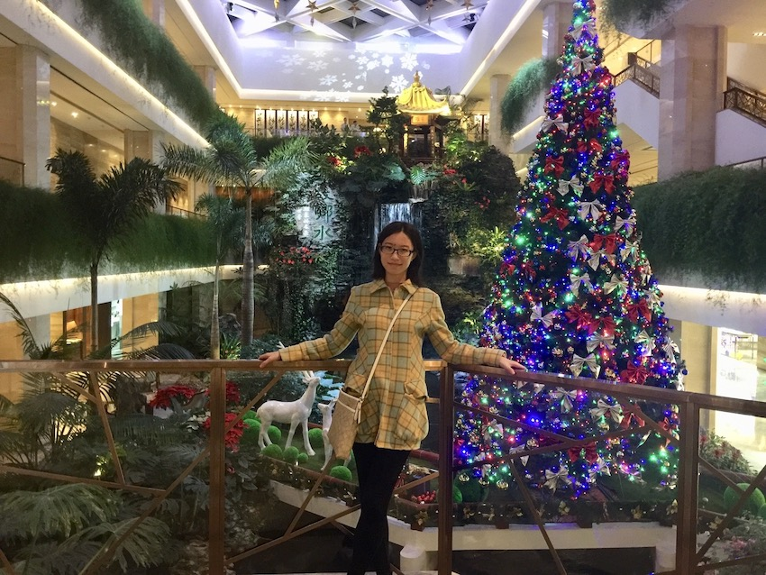

I am currently pursuing a PhD in the Department of Combinatorics and Optimization at the University of Waterloo.
My supervisor is Chris Godsil.
I am interested in algebraic combinatorics, including algebraic graph theory and quanutm walks.
Here is my CV.
